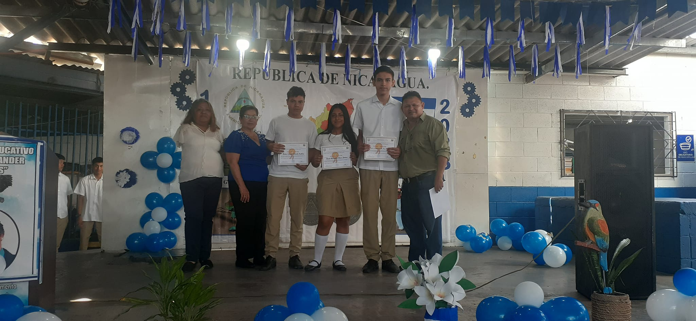

El lugar ideal donde sus hijos podrán adquirir conocimientos de maestros cualificados en sus materias, 30 años de aniversario sirviendo a la población de todo Popotlán en el distrito de Apopa en el municipio de San Salvador oeste.
En esta modalidad académica tienes la posibilidad de cursar las materias de tronco común más una modalidad propedéutica, es decir, una enseñanza que te prepara para que continúes con tus estudios universitarios, donde tendrás la posibilidad de concluir una licenciatura.
El bachillerato general brinda una formación propedéutica que permite ir acercando a los estudiantes hacia sus estudios universitarios bajo una educación básica e integral con la que puedan desarrollar sus capacidades, conocimientos y habilidades
El bachillerato hace referencia a un programa de estudio de educación media que también es conocido como preparatoria, ya que prepara al estudiante para los estudios superiores (universitarios). Dicho programa suele variar en los países dependiendo de su sistema educativo
